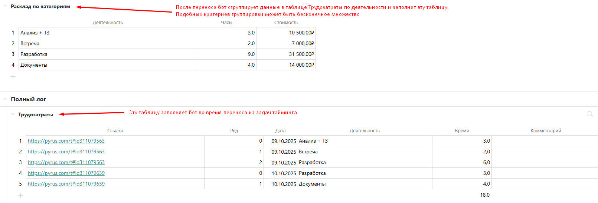

Администрирование бота копирования TS
Общее описание
Бот копирования запускается в задаче, определяет применимые для неё правила и переносит данные в целевые задачи. Каждое правило применяется к паре задач в одном направлении не более одного раза - это исключает зацикливание. Все ошибки агрегируются по задаче‑источнику и отправляются одним комментарием. Если бот уже отправлял ошибку с таким текстом и другими пользователями написано менее 5 комментариев, бот не будет повторно отправлять сообщение.
Бот поддерживает перенос всех типов полей, в том числе системных. Допустимые соответствия полей описаны далее. Бот поддерживает следующие правила переноса:
Простое поле в простое
Простое поле в табличное
Табличное поле в табличное
Табличное поле в простое (подробнее далее)
Перенос данных осуществляется по цепочке. То есть при вызове из задачи А бот после переноса в задачу Б, бот далее проверяет все правила для задачи Б. Такая проверка запускается только если изменилось хотя бы одно поле в задаче Б. В правиле можно прописать условия, которым должна удовлетворять задача или строка (если перенос осуществляется из таблицы). Перенос может выполняться без уведомления пользователей.
Целевая задача указывается в поле. При этом оно может быть пустым, бот умеет искать задачи в реестрах и создавать отсутствующие, если это прописано в правиле.
Также в боте предусмотрена возможность дорабатывать его в процессе внедрения под конкретные случаи пользовательским кодом.
Настройки
В настройках передаётся массив объектов rules. Последовательность правил имеет значение, для каждой задачи проверяются все правила последовательно. Каждое правило состоит из следующих параметров.
Тип настроек
/**
* Правила копирования данных между задачами и таблицами.
*/
type CopyRule = {
/** Необязательно, для логирования ошибок и читаемости настроек */
comment?: string;
/** Массив из id форм, к которым будет применяться правило. Если не указан, правило применяется ко всем */
permitted_forms?: number[];
/** Код поля с целевой задачей */
target: string;
/** Условия переноса для задачи. Действует только для внетабличных полей */
conditions?: Record;
/** Правила соответствия полей между собой. Ключ - поле-источник, значение - одно или несколько полей целей */
relations: Record; // Соответствие кодов полей
/** Коды колонок для хранения ссылок на задачи */
task_table_codes?: string[];
/** Коды колонок для хранения указаний на ряды таблицы-источника */
codes_for_tables?: string[];
/** Условия для рядов */
table_conditions: Record;
/** агрегация в таблицы */
agregate_tables?: {unique_columns:Record, values: Record}[],
/** Если в задачу вызова надо подтянуть данные из целевой */
reverse?: boolean; // Копировать данные в обратном направлении
/** Правила создания и поиска задачи */
form_rules: {
id: number; // ID формы
filter_fields?: Record; // правила фильтрации для поиска по реестру
task_field_code?: string[]; // Коды полей, которые надо заполнить задачей вызова
fields_on_creation?: Record; // если в созданную задачу нужно перенести данные из задачи вызова при создании
only_existing?: boolean; // Не создавать новую, а искать существующие
include_archived?: boolean; // Учитывать закрытые задачи
take_last?: boolean; // Использовать последнюю созданную задачу
ignore_limit?: boolean; // Игнорировать лимиты на количество создаваемых в рамках одного вызова задач
};
/** Если после отработки всегда надо поставить утверждение */
need_to_approve?: boolean;
/** Если целевая задача закрыта, то надо переносить и переоткрывать */
reopen_task?: boolean;
/** Если нужно отправлять данные в закрытую задачу без переоткрытия */
to_closed_task?:boolean;
/** Копировать данные бесшумно */
skip_notification?: boolean;
};
К каким задачам применяется правило
Разрешённые формы (permitted_forms) - массив чисел, id форм, по которым должна быть создана задача, чтобы к ней применилось правило. Опциональный параметр, если не указан - правило применяется ко всем задачам
Условия задачи (conditions) - словарь правил на поля задачи, для которой применяется правило. Если хотя бы одна проверка не пройдена, правило не применяется. Ключом правила является код поля, для которого применяется правило. Поле должно быть внетабличным (для строк таблиц есть отдельный параметр). Каждое правило - массив объектов вида:
Значение (value) - для каждого типа поля значение своё. Подробнее далее
Оператор (operator) - строка, которая может принимать одно из следующих значений:
equal - строгое равенство
not_equal - строгое неравенство
include - входит в список
not_include - не входит в список
empty - пустое значение
not_empty - любое значение, кроме пустого
larger - значение больше
less - значение меньше
Условия для рядов (table_conditions) - словарь, аналогичный conditions. Если перенос осуществляется из строк таблицы, то есть возможность выставить условия для переноса. Если в рамках одного правила осуществляется перенос из нескольких таблиц, то это не будет проблемой. Если в ряду нет ячеек с кодом правила (который используется как ключ словаря), это условие считается выполненным. Значение словаря объект, аналогичный описанному ранее
Целевая задача (target)
Код поля, где хранится номер целевой задачи. Поддерживаются поля типов Текст, Форма, Число и Справочник. Может быть табличным (перенос по строкам) или строкой со списком ID через запятую (перенос в несколько задач). Для справочников колонка указывается индексом, нумерация с 0, например: "catalog:2", по умолчанию используется первая колонка.
Соответствия полей (relations)
Словарь соответствия кодов полей задачи-источника и кодов полей задачи-цели. В качестве ключа используется код поля задачи-источника. Если поле отсутствует в задаче, код пропускается без прерывания выполнения правила. В качестве значения может быть как одиночный код поля задачи, так и массив из кодов. Если код отсутствует в целевой задаче, он просто пропускается. Как в ключе, так и в значении, можно указать индекс через двоеточие от кода. Например, catalog_field:1 Индекс влияет на режим переноса. Подробнее в разделе соответствия типов полей
Обратите внимание, что если reverse = true , коды задачи вызова должны выступать в качестве значений словаря.
Перенос в таблицы
Бот умеет работать с таблицами. В relation можно указать табличное поле как в качестве источника, так и в качестве цели. В таком случае, у таблицы обязательно должен быть код, иначе бот сообщит ошибку и не будет переносить поля. Если целевое поле является табличным, боту нужны указатели для определения строки, в которую заносить значения. В их роли выступают параметры:
Коды колонок с указанием на задачу (task_table_codes) - всегда массив строк, коды колонок в целевой таблице, куда записывается ссылка на задачу‑источник. Могут быть полями типа Текст, Форма, Число или Справочник
Коды колонок с указанием на номер ряда (codes_for_tables) - всегда массив строк, коды колонок для хранения номера строки источника (row_id) при переносе «таблица → таблица».
Если в одном правиле перенос осуществляется в несколько таблиц, бот сам определит для какой таблицы какой код надо использовать. Если в целевой таблице нет подходящего ряда, бот добавит его. При переносе из таблицы в таблицу, бот удаляет все строки в целевой таблице, в которых указан row_id, которых нет в таблице-источнике (например, после удаления строки пользователем).
Создание и поиск задач
Если поле с кодом, указанным в параметре target правила, пустое, то бот может найти или создать задачу и перенести данные в неё. Процесс поиска и запускается, если в правиле есть параметр form_rules. Это объект который состоит из следующих атрибутов:
ID целевой формы (id)- число, обязательный параметр, id формы, по которой надо искать/создавать задачу. У бота должен быть доступ к этой форме.
Фильтры (filter_fields) - словарь из кодов, в котором ключом является код задачи-источника (будет использовано значение из этого поля), а значением является код целевой формы. Этот параметр обязателен, если планируется поиск подходящих задач по реестру. Также необходимо, чтобы у бота был доступ на выгрузку реестра этой формы. Если хотя бы один фильтр не удалось составить, поиск прекращается, задача не создаётся.
Использовать закрытые (include_archived) - логическая переменная, если true, то поиск будет происходить и среди закрытых задач
Поиск только среди существующих (only_existing) - логическая переменная, если в случае, когда поиск нашёл ноль задач, не нужно создавать задачу, поставьте true. По умолчанию, false, поэтому бот в таких случаях приступает к созданию задач
Использовать последнюю созданную (take_last) - логическая переменная. По умолчанию, если найдено несколько подходящих задач, бот напишет об этом сообщение в задачу и не выберет ни одну. Если этот параметр указан true, бот будет использовать последнюю созданную задачу.
Поля со ссылкой на материнскую задачу (task_field_code) - массив строк с кодами в целевой форме. В задаче, которая была найдена или создана, бот заполнит указанные поля значением задачи вызова
Перенос при создании (fields_on_creation) - в некоторых случаях поля нужно перенести только при создании. В таком случае, указывайте словарь соответствия этих полей в этом параметре. Правила заполнения такие же как и параметра relations
Создание без ограничений (ignore_limit) - логическая переменная, по умолчанию, в рамках одного запуска бот не может создать более 10 задач по одной форме. Это сделано в целях защиты от результатов некорректных настроек пользователей. Установите этот параметр, если настройки бота хорошо оттестированы и у вас действительно есть случаи, в которых в рамках одного запуска может быть создано более 10 задач по одной форме.
Другие настройки
Комментарий к правилу (comment) - строка, необязательный параметр. Способ улучшить читаемость настроек, также участвует в некоторых сообщениях об ошибках от бота
Агрегация таблиц (agregate_tables) - массив из объектов, необязательный параметр. Подробно описано далее
Сортировка таблиц (sorting_rules) - словарь, в котором ключом является код таблицы, значение - массив колонок, по которым нужно сортировать. Необязательный параметр. Подробно описано далее.
Режим загрузки (reverse) - логическая переменная. Укажите true, если надо не переносить в задачу из поля, а подтягивать из неё данные в задачу вызова.
Утвердить после отработки (need_to_approve) - логическая переменная. Бот по умолчанию всегда ставит утверждение, если на этапе не осталось пользователей и к задаче подошло хотя бы одно правило. Если же бот стоит в наблюдателях и проставлен этот параметр, бот также поставит согласование, если подошло хотя бы одно правило (если не подошло по условиям, бот не поставит). Полезно использовать в сочетании с параметром reverse, если нам надо подгрузить данные из источника по нажатию кнопки.
Переоткрывать задачу (reopen_task) - по умолчанию, если задача из целевого поля закрыта, бот не осуществляет перенос. Если проставлен этот параметр бот перенесёт данные и переоткроет задачу.
Перенос в закрытую задачу (to_closed_task) - дополнение к предыдущему параметру. Если нужно перенести данные без переоткрытия задачи, используйте этот параметр. Если одновременно с ним проставлен reopen_task, бот переоткроет задачу, поэтому наличие этого параметра становится избыточным
Бесшумный перенос (skip_notification) - логический параметр, если проставлено true, перенос будет осуществлён без уведомлений пользователей и ботов. Если часть данных надо переносить тихо, а о части уведомлять пользователей или ботов, сделайте два правила с разными relations.
Дополнительные поля
При обработке задач бот добавляет следующие коды в свой словарь named_fields (а значит ими можно пользоваться при установке настроек)
Дочерние к комплексным подтипам текстовых полей Организация, Банк, Адрес
Если у основного поля есть код, то у его дочерних полей будут коды, построенные по формуле <код основного поля>*<короткое название дочернего поля без пробелов>. Единственное, важно, чтобы у всех полей типа Организация, Банк и Адрес были разные названия (различающиеся хотя бы пробелом). Пример: есть поле Контрагент типа Организация с кодом client. Значит его дочерние поля будут иметь коды client*ИНН, client*КПП, client*ПолноеНаименование.
Поля с номером задачи разных типов
Доступны поля типа: Число (код $task_id), Текст (код $task_link), Форма (код $task_field). Их можно использовать для указания в качестве целевой задачи задачу вызова. Например, когда надо конвертировать поле одного типа в другое. Пример:
{
"comment": "Перенос id пользователя в отдельное поле для формирования ссылки в ИПР",
"permitted_forms": [2335766],
"target": "$task_link",
"relations":{
"emp": "emp_id"
}
}Характеристики задачи
Часть свойств задачи превращены в поля, чтобы их можно было переносить в другие задачи или использовать в условиях для правил. Менять эти поля не имеет смысла, изменения не будут применены, обновление завершится ошибкой API
Код | Свойство | Тип поля | Комментарий | Заполнение |
| Закрыта/Открыта | Галочка. | Проставлена, если закрыта. | Если заполнить в процессе запуска, то при комментировании задача закроется. Если снять, задача переоткроется |
| Системный ответственный | Контакт | Можно изменить, пользователь будет назначен ответственным | Если заполнить в процессе запуска, пользователь будет установлен ответственным |
| Последняя дата изменения | Дата | - | |
| Этап задачи | Число | Отсчёт с 1 | - |
| Дата закрытия | Дата | - | |
| Номер задачи-родителя | Число | Если у задачи нет родителя, пустое. | - |
| Срок задачи со временем | Дата | Обратите внимание, что не может быть одновременно и | Установится срок со временем. Если передана просто дата (например, из поля Дата), то будет указана полночь по нулевой таймзоне (то есть, в Москве будет отображаться срок в три часа ночи) |
| Срок задачи | Дата | Обратите внимание, что не может быть одновременно и | Установится срок без времени. Если передать в переменную дату со временем, время будет обрезано |
| Длительность | Число | Продолжительность срока, если установлен срок с интервалом | Если передать вместе с due или due_date, будет установлен срок с интервалом |
| Конец интервала Срока | Дата | Конец интервала срока | При передаче нового значения в задаче будет установлен срок с интервалом. |
| Дата и время запуска | Дата | В качестве значения проставляется дата и время запуска бота. Полезна для сравнений | - |
Дополнительные колонки
У каждого ряда каждой таблицы есть "фантомные ячейки":
<код таблицы>_$task_id - тип Число, значением является номер задачи
<код таблицы>_$row_id - тип Число, row_id строки
Может быть полезно, если надо конвертировать типы в рамках одной таблицы. Пример: есть колонка типа Дата в таблице c кодом date_table. Надо, чтобы в каждой строке отражался год, который выставлен в этой колонке. В таком случае правило будет следующее:
{
"comment": "Перенос года в ту же строку",
"permitted_forms": [2335876],
"target": "$task_link",
"relations":{
"date:Y": "year_of_date"
},
"task_table_codes":["date_table_$task_id"],
"codes_for_tables": ["date_table_$row_id"]
},Результаты согласования этапов
Для каждого этапа добавляется 2 поля: согласующий пользователь и результат согласования. Количество этапов считается по настройкам маршрутизации. Нумерация этапов для формирования названий считается с 1.
Также добавляется таблица с историей согласований.
Поля с согласующими пользователями
Для каждого этапа в словарь named_fields добавляется поле с кодом вида $approver_step_${step}, где step номер этапа с 1. Поле имеет тип Число. Если на этапе стоит только один пользователь/роль/бот, полю будет присвоено значение id этого пользователя. Если в форме выставлена настройка подключения пользователей с визой Против, то после её исполнения поле будет опустошаться, потому что на этапе, с точки зрения бота, стоит два пользователя. Если на этапе стоит Роль и виза не проставлена, поле будет иметь значение id роли. После простановки визы значение поля будет равно id поставившего визу пользователя.

Для корректной установки конкретного пользователя у бот должен быть доступ ко всем комментариям
Поля с результатами согласований
Для каждого этапа в словарь named_fields добавляется поле с кодом вида $approver_choice_step_${step_num}, где ${step_num} номер этапа с 1. Поле имеет тип Текст и может содержать 4 значения: approved, acknowledged, rejected или waiting. Если на этапе есть хоть один пользователь, не поставивший согласование, поле будет иметь значение waiting. Если на этапе есть хоть одна виза Против, поле будет иметь значение rejected. Если на этапе никого нет, поле будет пустым. Для корректной установки конкретного пользователя у бот должен быть доступ ко всем комментариям
Таблица согласований
При обработке задачи в словарь named_fields добавляется таблица с кодом $approver_table. В отличие от остальных дополнительных полей, у этого поля id не null, а -1, а у всех его колонок parent_id = -1. Колонки таблицы:
Обычные дополнительные колонки, как у всех таблиц с кодами $approver_table_$task_id и $approver_table_$row_id
Номер этапа ($approval_step) - колонка типа Число
Согласующий на этапе ($approver) - колонка типа Число, в ней хранится id пользователя/роли/бота, который стоит на маршруте
Дата согласования ($approving_date) - поле типа Дата с датой последней простановки согласования. Если виза не проставлена - пустая
Решение ($approval_choice) - поле типа Текст. Может иметь значения approved, acknowledged, rejected или waiting. Никогда не null
Согласовавший пользователь ( $approval_user) - колонка типа Число, в ней хранится id пользователя/бота, который поставил визу от лица согласующего (если это роль). Если согласования нет, ячейка пустая
Таблица заполняется по истории комментариев, поэтому важно, чтобы у бота был доступ ко всем комментариям. Таблица может пригодиться в следующих случаях:
Особые правила регистрации итогового решения. Если стандартное правило, описанное выше, не подходит, в кастомные функции можно будет дописать код, который заполнит специальные поля под каждый этап по нужному правилу
Формирование листа согласования - иногда требуется сделать особый шаблон листа согласования. Тогда сделайте таблицу на форме и заполняйте её на основе автоматически формируемой. Можно заносить в эту таблицу только интересующие вас этапы, если в параметр table_conditions настроек добавить условия на колонку $approval_step
Правила соответствия полей
Чтобы значение поля было перенесено, поля необязательно должны быть одинакового типа. Также поддерживается перенос системных полей в поля пользовательских типов. Системное поле Статус далее считается полем типа Выбор с кодом Status
Правила заполнения поля типа Справочник
Некоторые поля поддерживают заполнение поля типа Справочник. В целевом поле будут выбраны все значения, которые удастся найти по передаваемому значению. По умолчанию поиск осуществляется по первой колонке справочника, но в коде через двоеточие можно передать номер колонки (считается с нуля) или название колонки. Например, если нам нужно искать соответствие по 3 колонке поля с кодом catalog, то следует передать "catalog:2"
Таблица соответствия
Все пользовательские типы полей можно копировать в поля этого же типа. Нижеприведённая таблица действительна для всех режимов переноса, кроме табличного во внетабличное
Поле исходной задачи | Поле целевой задачи |
Текст (в том числе дочерние, порядок установки кода выше) | Справочник - поиск по полному соответствию в нужной колонке Форма - только одна задача. Формат записи любой, все нечисловые символы будут обрезаны Число, Деньги Выбор - один выбор, поиск по полному соответствию |
Форма | Текст - будет записана ссылка на задачу Число Справочник |
Форма в формате "<код поля>:name" | Текст - будет записан заголовок задачи |
Форма в формате "<код поля>:int" | Текст - будет записан номер задачи |
Справочник | Справочник (справочники, на которые ссылаются поля должны совпадать) |
Справочник в формате "<код поля>:<номер колонки>" Не во все поля поддерживается перенос из поля с мультвыбором. Об этом написано в пояснении к типу поля | Текст - если несколько значений в справочнике, значения в выбранной колонке будут записаны через запятую Форма - если единственное значение Выбор - поддерживается мультивыбор Галочка - если единственное значение. Поддерживаются пары значений 0/1;true/false;checked/unchecked Число и Деньги - если единственное значение Дата и Срок - если единственное значение. Срок с датой будет установлен на 0 часов Допустимые форматы YYYY-MM-DD и DD.MM.YYYY Телефон - если единственное значение Email - поддерживается множественный выбор. В том числе поддерживается запись из колонки маршрутизации Контакт - в колонке может быть id или email пользователя (также поддерживается колонка маршрутизации). Если единственное значение |
Выбор | Выбор - в том числе Мультивыбор. Будут занесены только совпадающие варианты Текст - если несколько вариантов, запись через запятую Справочник - поиск будет осуществляться для всех вариантов выбора |
Галочка | Текст - через двоеточие в коде передаваемого поля можно написать какая пара значений будет заноситься. Доступны пары "Да/Нет", "Yes/No", "1/0". Для выбора пары нужно передать первое слово пары. Например, " Число - если галочка проставлена 1, если нет 0 Выбор - поддерживается, если в поле Выбор есть варианты "Да" или "Yes" и "Нет" или "No". Также второго слова может не быть, тогда поле будет опустошаться |
Деньги | Число Текст |
Число (для переноса во Время доступен индекс) | Деньги Текст Контакт Время (индекс представляет из себя поправку на таймзону, по умолчанию 0) |
Дата, Срок (все виды), Дата создания | Текст - запишется в формате YYYY-MM-DD Срок - все виды, но все типы со временем будут устанавливаться на 00:00, если только не идёт перенос из Срока со временем в Срок со временем Дата Число |
Дата, Срок (все виды), Дата создания с индексами | Текст и Число. Доступные индексы: Y - год, 4 знака Y2 - год, два знака M - месяц, всегда два знака (например, "02") RU - полная дата в формате dd.mm.yyyy. Только для Текста |
Время (доступны индексы) | Текст (будет записано в формате HH:MM, индекс указывает часовой пояс, по умолчанию 0) Число - количество минут с начала дня, индекс указывает часовой пояс, по умолчанию 0 |
Телефон | Текст Справочник |
Эл. почта | Текст Контакт Справочник |
Контакт, Автор, Ответственный | Текст - будет записано Имя Фамилия Число - запись id Эл.Почта Справочник Контакт Ответственный |
Этап | Число Текст - будет записано название этапа в соответствии с настройками формы |
Этап с индексом full | Текст - запись в формате <номер этапа>: <название этапа> |
Перенос файлов
Файлы переносятся только в поля типа Файл. Всегда сохраняется версионность файлов.
Перенос колонок таблиц во внетабличные поля
Может применяться в двух случаях:
содержимое таблицы нужно перенести во внетабличное поле. Или, например, выделить в отдельное поле значения только из избранных строк (которые подходят под условия) и дальше использовать их. Или чтобы подготовить данные к переносу в другую задачу, где задача вызова представлена в виде строки таблицы, а нам надо дать сводку по таблице (график платежей, к примеру). Может быть полезно при использовании в user-скриптах
отобразить какой-то сводный показатель в специальном поле
В обоих случаях учитываются только данные в строках, подходящих по условиям (как кастомным, так и штатным).
Перенос значений строк переносятся в поле возможно только в следующих случаях:
Колонка типа Файл в поле типа Файл. Например, чтобы собрать все уникальные файлы из таблицы в одно поле
Перенос во внетабличное многострочное текстовое поле - доступно для типов, для которых доступна конвертация в Текст (все кроме файлов). Значения будут записаны через перевод строки (\n). Если значение в ячейке пустое, то это будет как пустая строка. Поэтому если надо, чтобы записывались только значения заполненных ячеек, поставьте условие на её заполненность (пустоту и заполненность поддерживают все типы).
Отображение сводных показателей становится возможно, если в коде цели сделать один из следующих индексов (то есть сделать следующую пару "source_table_column":"field:sum")
Индекс / операция | Поддерживаемые типы полей для заполнения | Результат |
| Все типы | Значение из первой строки, подходящей по условиям. При переносе справочника поле-источник и поле-цель должны ссылаться на один справочник |
| Все типы | Значение из последней строки, подходящей по условиям. При переносе справочника поле-источник и поле-цель должны ссылаться на один справочник |
| Все типы | Считает все заполненные значения (0 считается заполненным значением) |
| Все типы | Считает все заполненные уникальные значения, кроме пустых (0 считается значением) |
| Число, Деньги, Дата, Срок | Минимальное значение (0 учитывается, пустые ячейки нет) |
| Число, Деньги, Дата, Срок | Максимальное значение (0 учитывается, пустые ячейки нет) |
| Число, Деньги | Сумма всех непустых значений |
| Число, Деньги | Среднее по всем непустым значениям |
| Число, Деньги | Медиана непустых значений |
Может применяться как при переносе данных в рамках одной задачи (кейс: перенесли данные из какой-то задачи, потом бот запускается для целевой задачи и применяет правило с target = $task_id и в relations колонка таблицы соответствует внетабличному полю), так и при переносе данных между задачами (изменения ДС ведутся в таблице, чтобы отобразить в карточке договора в таблице ДС изменения нацеливаем колонку таблицы Изменения на ячейку Изменения в ДС).
Установка условий
Бот позволяет установить условия отработки правила в задаче (conditions). Это может быть полезно, если в задаче много правил и для некоторых бот подключается слишком рано или если у вас есть различие в целях назначения информации в зависимости от типа задачи.
Также условия можно выставлять на перенос конкретных строк таблицы(table_conditions). Например, нам нужно отправлять в целевую задачу только те спецификации, которые отмечены как активные.
Условия формируются одинаково: в качестве ключа словаря указывается его код. Для значения нам нужно понимание целевого значения и оператор для сравнения. Операторы empty и not_empty не требуют передачи value.
Доступные операторы зависят от типа поля:
Тип поля | equal | not_equal | include | not_include | empty | not_empty | larger | less |
Текст | ✔️ | ✔️ | ✔️ | ✔️ | ✔️ | ✔️ | — | — |
Выбор | ✔️ | ✔️ | ✔️ | ✔️ | ✔️ | ✔️ | — | — |
Галочка | ✔️ | ✔️ | — | — | ✔️ | ✔️ | — | — |
Справочник | ✔️ | ✔️ | ✔️ | ✔️ | ✔️ | ✔️ | — | — |
Форма | ✔️ | ✔️ | — | — | ✔️ | ✔️ | — | — |
Число/Деньги | ✔️ | ✔️ | — | — | ✔️ | ✔️ | ✔️ | ✔️ |
Дата/Срок/Дата создания | ✔️ | ✔️ | — | — | ✔️ | ✔️ | ✔️ | ✔️ |
(прочие) | — | — | — | — | ✔️ | ✔️ | — | — |
Форматы передаваемых значений также зависят от типа поля:
Тип поля | Что ожидать в | Пример(ы) | Нормализация/заметки |
Текст | Строка |
| Для |
Выбор | Строка или массив строк (имена вариантов) |
| Имена триммятся; массив сравнивается как множество (порядок не важен). Пусто: |
Галочка |
|
|
|
Справочник | Строка или массив строк (ожидаемые ячейки в колонке) |
| Сравниваются строки ячеек выбранной колонки. Для |
Форма | Строка с id задач через запятую |
| Парсится как список |
Число/Деньги | Число или строка, приводимая к числу |
| Приведение через |
Дата/Срок/Дата создания | Дата в формате, который понимает |
| Если не удаётся преобразовать строку в дату — ошибка |
(прочие) | — | — | Вернётся ошибка |
Условия в зависимости от значения других полей
Кроме статичных значений в value можно передать код поля, значение которого будет использоваться для сравнения со значением целевого поля. Можно передавать как внетабличные, так и табличные поля. Таким образом можно выставить условия на задачу (например, чтобы проверить, что доходы больше расходов или что плановая дата больше даты вызова) или на колонку (например, отобрать только время ПМ из таблицы или взять только последний активный расчёт для переноса во внетабличное поле). Если в условие передаётся табличное поле и тип проверямого типа не Текст, необходмо передать индекс через двоеточик
Чтобы передать в условие другое поле, необходимо передать его код с приставкой ! в начале. Например,
"table_conditions": {
"frame_table_active": [{"operator": "not_empty"}],
"frame_agr_table$row_id": [{"operator": "equal", "value": "!frame_agr_table$row_id:max"}]
},В примере выше необходимо во внетабличное поле перенести последний добавленный рамочный договор. У последней строки будет максимальный row_id в таблице, поэтому в value передаётся
frame_agr_table$row_id - код колонки с row_id
! - перед кодом ставится восклицательный знак, чтобы бот понял, что это не строковое значение, а код поля
max - передаётся индекс max для получения одного значения, с которым сравнивается значение ячейки в каждом ряду
Обратите внимание, что при передаче табличного поля значения будут браться только из колонок, которые сами подходят по условиям. В примере выше, будет браться максимальный row_id не среди всех рядов, а только среди отмеченных галочкой frame_table_active
Агрегация таблиц
Кейсы и примеры
Кейс использования: в карточке какого-то объекта надо в таблице отобразить данные в разрезе каких-то критериев. Например, в карточке процесса надо отобразить время, потраченное каждым сотрудником в разрезе деятельности. По умолчанию при переносе ориентируется на колонки с номерами задач и рядов в таблицах. Но после переноса в подобную таблицу, он может провести агрегацию данных из неё во вторую таблицу.

Аналогично можно организовать процесс закупок (несколько отделов создают задачи, целевая определяется по месяцу оформления, в итоге группируются по номенклатуре в таблицу общего заказа) или в карточке клиента можно отображать среднюю стоимость его покупок в разрезе категорий (в задаче закупки таблица с номенклатурой, в скрытую колонку переносится категория номенклатуры, вся таблица потом переносится в карточку клиента, потом группируется по той скрытой колонке в отдельной таблице).
Настройка агрегации
Агрегация выполняется после переноса всех полей, указанных в правиле. Регулируется параметром agregate_tables , который представляет из себя массив из объектов, каждый из которых должен обладать двумя атрибутами:
Соответствие колонок (unique_columns) - словарь из кодов полей. Ключ - колонка в таблице-источнике, значение - колонка в таблице-цели. При запуске бот проходит по таблице-источнику и собирает уникальные комбинации полей. Пустые поля также участвуют в наборе комбинаций. При агрегации бот в таблице-цели бот будет искать эти комбинации значений. Если не найдёт - добавит строку. Все лишние строки удаляются. Если хотя бы одной колонки в одной таблице нет, агрегация отменяется, в целевую задачу будет написана ошибка. Поля должны быть одинакового типа.
Поля для агрегации (values) - словарь из кодов полей. Ключ - колонка в таблице-источнике, значение - колонка в таблице-цели. Поддерживается перенос типов в соответствии с таблицей соответствия. При запуске бот набирает для каждого поля массив значений, который затем помещает в ячейку. Механизм переноса аналогичный переносу табличного поля во внетабличное, поэтому при переносе в ячейку с типом отличным от Текст, рекомендуется использовать индекс. Поля типа Файл не поддерживаются.
Пример:
{
"agregate_tables":[
{
"unique_columns": {
"spent_activity": "category_activity"
},
"values": {
"spent_time": "category_hours:sum"
}
}
]
},Сортировка таблиц
После переноса всех данных и агрегаций можно отсортировать таблицы. Например, мы агрегируем заказы из разных задач и нам надо отсортировать таблицу по убыванию общей суммы заказа. Или же такой функционал может понадобиться, когда данные заносятся пользователями и после этого надо отсортировать таблицу. Например, пользователь заносит ФИО участников конференции и после каждой добавленной фамилии бот выстраивает участников в алфавитном порядке.
Сортировка может быть по нескольким параметрам. Например, мы собираем в карточке продукта статистику его заказов у клиентов. И мы хотим отсортировать эту таблицу по клиентам в алфавитном порядке (по возрастанию буквы), а внутри клиента по убыванию стоимости.
Для этого в правило надо добавить атрибут sorting_rules, который представляет из себя словарь, в котором ключом является код поля, а значением массив из кодов полей. По умолчанию сортировка идёт по убыванию, если нужно сортировать по возрастанию - добавьте в код любой символ через двоеточие.
Пример настроек:
"sorting_rules": {
"main_targets": ["main_targets_table_date:asc"],
"process_table": ["process_table_client: asc", "process_table_minutes"],
"client_table": ["u_client: asc"]
},Логи бота
Во время отработки бот пишет об ошибках в задачи, для которых применяется правило. Также бот часть информации и ошибок пишет во внутренние логи, чтобы не отвлекать пользователей. В профиле бота в разделе "Журнал событий" после каждого запуска записывается лог. Штатно доступны следующие комментарии (не рекомендуется их удалять или комментировать).
Лог итогового списка ошибок
Строка для поиска console.log("error_log", error_log);
Здесь отражаются все ошибки, которые возникли в процессе запуска бота в разрезе задач. Так как бот отправляет ошибку в задачу только раз в 5 текстовых комментариев, иногда сложно понять после повторного запуска: ошибки нет потому что её исправили или просто ошибка не была отправлена в задачу? В таком случае зайдите в профиль бота: во внутренний лог бот всегда записывает все ошибки. Если ошибок в процессе запуска не было, лог будет error_log {}
Лог блокировки создания
Строка для поиска console.log("stopped_creation_over_limit");
Как было сказано выше, в боте стоит защита от лишнего создания задач. Если в логе присутствует это сообщение, значит бот дошёл до границы создания. Задачей в таком случае является разобраться является ли это действительно следствием создания лишних задач или действительно нужно было создать более 10 задач (в таком случае, поставьте параметр ignote_limit для этого правила)
Лог времени
Строка для поиска console.log("working", get_time_seconds(start_time, new Date()));
Записывает сколько секунд работал бот. В абсолютном большинстве случаев будет записано 0. Если цепочка переноса длинная или в процессе создавалось много задач, число может подняться до 10. Если число больше 10, следует рассматривать это как ошибку и разбираться в причинах
Лог ошибки сравнения
Строка для поиска console.log("used default", new_field);
При применении правила бот определяет изменились ли поля в целевой задаче. И только если поля изменились, применяет правила к целевой задаче. Для этого используется функция same_value. Если в логе бота присутствует эта запись, значит функция не смогла обработать сравнение каких-то полей и выдала результат по умолчанию. В таком случае нужно обратиться к администратору для изучения этого кейса подробнее. Иначе бот каждый раз в этом случае выполнять лишнюю работу. применяя правила к задачам, в которых не было изменений
Лог ошибки получения справочника
Строка для поиска console.log(catalog);
При переносе данных в справочник боту необходимо его загрузить. По умолчанию пользователь организации может загрузить для чтения любой справочник. Поэтому единственный случай, когда в профиле будет этот лог, если бот пытается получить справочник другой организации.
Лог загрузки задачи
Строка для поиска console.log("getting_task", task_id);
Регистрирует каждый запрос API для получения задачи. Так можно отслеживать особо крупные цепочки задач, возможно, задуматься об их оптимизации
Лог комментирования задачи
Строка для поиска console.log("Отправка комментария в задачу", task_id);
Аналогично логируются все комментарии в задачи. Есть два режима таких комментариев: простой (пишет простое сообщение) и подробный (также отражает тело комментария). По умолчанию включён простой лог, но при необходимости или странных комментариях включите подробный комментарий. Лог полезен для отслеживания сколько раз бот комментирует одну задачу за запуск.
Возможности кастомизации
В боте заложены возможности для доработки под конкретные правила . Будьте осторожны, так как ошибки в кастомных обработках могут повлиять на всю работу бота, вплоть до отключения.
Дополнительное логирование
Кроме штатных логов в коде предусмотрены полезные логи, которые не нужны на постоянной основе (так как очень большие и портили бы читаемость журнала событий), но могут быть полезны при отладке правил.
Список всех правил
Строка для поиска rules.forEach((r, i) => console.log(i, r.comment));
Если список правил стал слишком большим, можно разблокировать эту строку, чтобы увидеть список всех правил. Важно, что это не список правил, применённых к задаче вызова, а список всех правил
Список изменённых полей
Строка для поиска console.log("Изменённые поля", rule_index, aim_task?.id, updated_codes);
После применения всех правил, бот укажет массив полей, в которые он переносил значения в рамках этого правила. Не факт, что он отправит комментарий, так как возможно значение поля не изменилось. Разблокируйте эту строку, если есть подозрение, что какое-то поле не было перенесено.
Фильтры при поиске по реестру
Строка для поиска console.log("Фильтры", filters);
Если в каком-то случае бот не нашёл нужную задачу, может быть полезно посмотреть на сформированные им фильтры
Сообщения в задачу
Строка 115
237
333
363
Дополнительные поля
Возможно, для выполнения ваших задач добавленных полей или колонок таблиц будет недостаточно. Вы можете добавить свои. Для этого нужно добавить их на шаблон формы и затем определить как будет устанавливаться значение каждого поля при обработке задачи. Также некоторые из подобных полей при обновлении могут менять состояние задачи и это надо предусмотреть в функции комментирования
Добавление поля на шаблон формы
Чтобы поле добавилось на шаблон любой формы, нужно изменить функцию fix_form бота. После обработки всех полей, нужно добавить следующие две строки:
new_form.named_fields["$Код нового поля"] = {id: null, parent_id: null, name: "Название нового поля", code: "$Код нового поля", info: {code: "$Код нового поля"}, value: null, type: "тип нового поля"};
new_form.all_fields.push(new_form.named_fields["$Код нового поля"]);Код нового поля рекомендуется начинать с $, чтобы случайно не совпасть с кодом, присвоенным реальному полю на шаблоне одной из ваших форм.
Если нужно предусмотреть добавление нового "фантомного" ряда, то в момент обработки таблицы (else if (field.type == 'table')) нужно добавить следующие строки:
new_form.named_fields[`${code}_$<новый код>`] = {id: null, parent_id:field.id, name:"Новая колонка в таблице", code: `${code}_$<новый код>`, info: {code: `${code}_$<новый код>`}, value: null, type: "Тип нового поля"};
new_form.all_fields.push(new_form.named_fields[`${code}_$<новый код>`]);Важно в данном случае менять только часть кода, а не весь. Иначе могут возникнуть ошибки.
Определение правил заполнения нового поля
Чтобы во всех загружаемых задачах поле автоматически заполнялось, нужно внести изменения в функцию fix_task
Для внетабличных полей их заполнение находится в конце функции. По аналогии с остальными подобными полями придумайте алгоритм заполнения этого поля:
full_task.named_fields["$ваш код"].value= task.свойство_задачи;Для табличных "фантомных" колонок заполнение происходит выше, после цикла добавления недостающих ячеек for (let missing_cell of list_of_missing_fields){ :
extendedRow.named_cells[`${field_code}_$<новый код>`].value = <шаблонное значение>;Изменение свойств задачи
"Фантомные" ряды не могут влиять на свойства таблицы или задачи. Но внетабличные дополнительные поля представляют из себя свойства задачи, поэтому могут оказывать влияние на состояние задачи. Для этого нужно дописать функцию comment_task условием, что в обновляемых полях есть новое поле. Внутри условия описываете, как меняется комментарий по аналогии с уже добавленными изменениями:
if (field.code == 'новый код поля') comment.атрибут_комментария = <новое значение>;Дополнительные условия для задач
Даже если правило не имеет своих условий, функция проверки всё равно запускается. И всегда сначала выполняются пользовательские проверки. Чтобы добавить свою проверку надо изменить функцию check_user_conditions , которая на вход получает:
АПИ клиент для совершения вызовов
Задача, из которой будет осуществляться перенос
Правило копирования, которое будет применено
Порядковый номер правила в списке правил, для логирования и добавления ошибок в задачу
Функция должна вернуть логическую переменную или строку с ошибкой. Если результат функции строка, это сообщение будет написано в задачу, а проверка будет считаться не пройденной.
Дополнительные условия для строк таблиц
Перед осуществлением переноса каждая строка проверяется на условия, указанные в правиле. Даже если нет штатных условий, функция проверки вызывает метод check_user_row_conditions, в который передаются:
АПИ клиент для совершения вызовов
Задача, из которой будет осуществляться перенос
Строка для проверки
Правило копирования, которое будет применено
Порядковый номер правила в списке правил, для логирования и добавления ошибок в задачу
Аналогично дополнительным условиям для задач, эта функция должна вернуть логическую переменную или строку с ошибкой, которая будет направлена в задачу
Подготовка перед переносом
Если задача подходит под условия правила, её можно "подготовить" перед применением правила. Например. можно заполнить какие-то поля на основе информации из задачи (которые затем участвуют в переносе). Для этого нужно написать функцию prepare_task . В функцию передаётся:
АПИ клиент для совершения вызовов
Задача, из которой будет осуществляться перенос
Правило копирования, которое будет применено
Порядковый номер правила в списке правил, для логирования и добавления ошибок в задачу
В этой функции необходимо провести все изменения полей и в ней же отправить. Иначе данные скорее всего (только если в процессе применения правила это поле не изменится) не будут обновлены в задаче вызова. Обновление рекомендуется делать при помощи вызова метода АПИ клиента bot.comment_task
Постобработка после переноса
После того, как значения всех полей были установлены в целевой задаче в соответствии с правилом переноса, есть возможность обработать новые данные перед отправкой изменений. Для этого надо отредактировать функцию post_copy_updates, в качестве аргументов которой передаётся:
АПИ клиент для совершения вызовов
Задача, из которой будет осуществлялся перенос
Задача, в которую перенесли данные
Правило копирования, которое будет применено
Порядковый номер правила в списке правил, для логирования и добавления ошибок в задачу
Если в результате постобработки изменились поля, ОБЯЗАТЕЛЬНО верните их значения в качестве результата функции. Иначе они не будут обновлены. Если в результате изменений в целевой задаче, нужно произвести какие-то изменения в задаче вызова, не предусмотренные правилами в настройках (то есть не просто запустить обратный перенос данных), рекомендуется выполнить все изменения в этой функции при помощи вызова метода АПИ клиента bot.comment_task